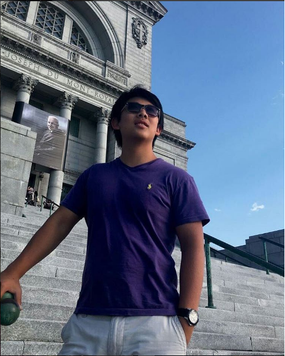
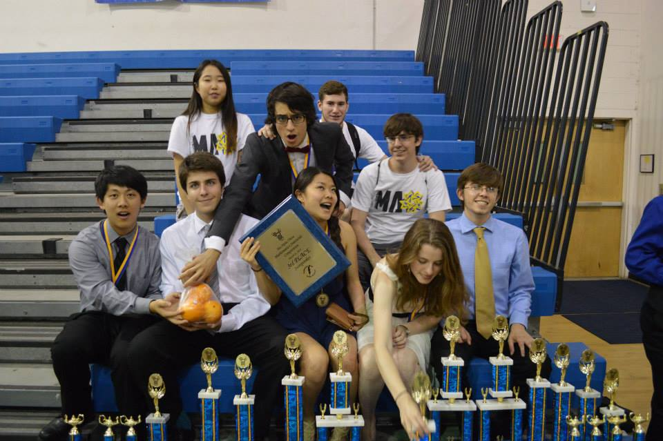
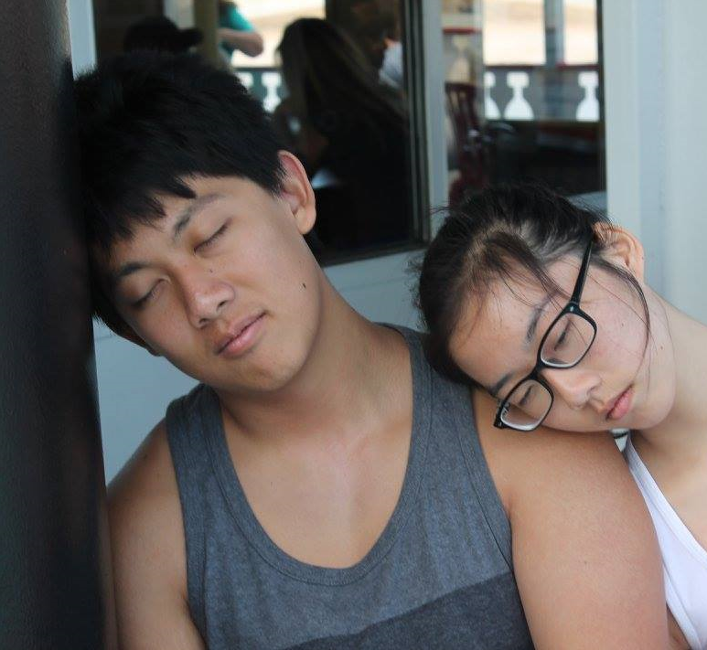

Hey, I'm David Li, a first year student at Georgia Tech. I'm currently studying electrical engineering, with a minor in computer science, and this page is a little about myself
Although I went to middle and highschool in Florida, most of my youth was spent in China. With a combination of my upbringing in China, as well as my highschool having a student body of over 4,700, I was raised with a very competetive nature. During highschool, through Mu Alpha Theta, I attended many math competitions, and on some occassions, placed nationally. The four years of my highschool spent in the honor society allowed me to siphon out my competetive spirit as well as hone my math and leadership skills, and my constant contact with mathematicals helped shape my career and academic goals.
I chose my major due to the fact that I have always had an interest in computers, hardware adn software alike. For a large part of high schoo, I believed that in college, I would end up majoring in comptuer science. In fact, that was my registered major until a week before school. My classes in Physics C pushed me towards an affinity for electrical circuits and engineering, and I've been wanting to understand the hardware of the technology I use on top of the software within them. But it seems all I hear about eletrical engineering here is that it is hard...
Outside of academics, I am also part of the club frisbee team, free style dancing group, and compete in Super Smash Bros Melee. Each of them are interests that I've carried with me since high school, and I'm glad that they not only exist, but are more popular at Georgia Tech. But at the end of the day, none of these are as fun without doing them with friends.
As I progress through my years at Georgia Tech, I hope that I would be successful in my journey both socially as well as academically. Perhaps even find a job and not be in debt...